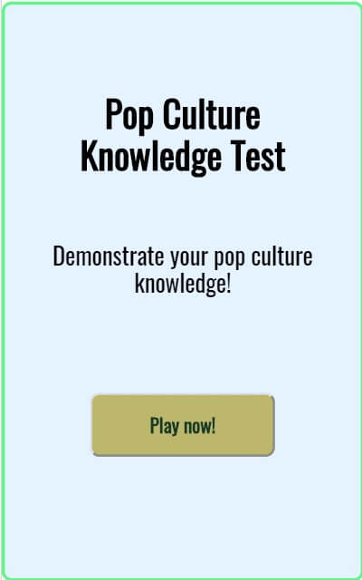

WELCOME TO THE STORY OF ORKUN
Some things to know about me...
I am an aspiring full-stack web developer whose favorite JavaScript library is REACT. My background in web development began with Thinkful’s Engineering Immersion Program. Coding, since then, has been a passion of mine because making ideas come to life using technology is extremely satisfying.
My social life consists mostly of spending time with my wife and son, playing the guitar since I was 12, and traveling the world.
Pop Culture Quiz
This quiz app tests the users' knowledge of pop culture. User stories are as follows:
- Start quiz
- Select from multiple choice answers
- Display the correct answer after submitting a wrong answer
- View their score each time after answering a question and at the end of quiz
- Restart quiz after completion
Technologies used:
Bookmarks

Users can add and store links to their favorite websites in this bookmark app with descriptions and ratings. Once added, bookmarks will be displayed on the main page and expand when their titles are clicked on to display their description, rating, and hypertext that will take users to the related website.

Technologies used: